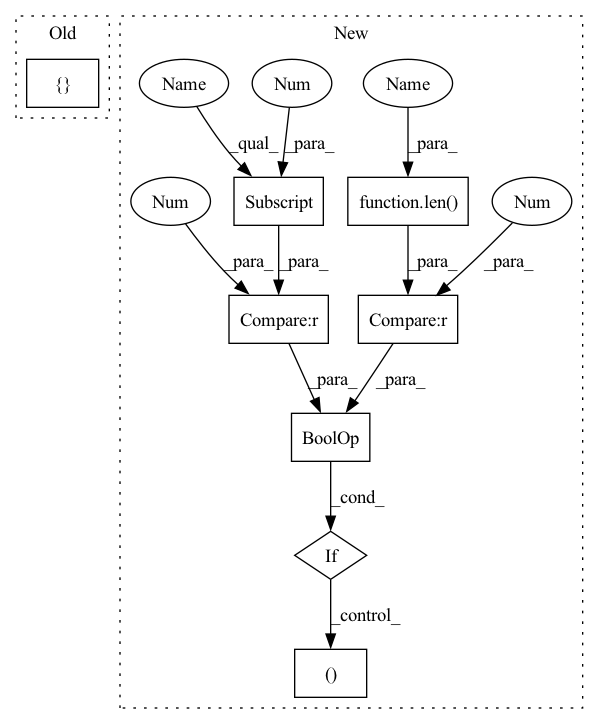

Pattern ID :1913

Before Change
def __init__(self, n_in, n_out=1, fc_layers=(), dropout_rate=0.0):
super(FCUnpairedLayer, self).__init__()
self.n_out = n_out
fc = []
for n_out in fc_layers:
fc += [
nn.Linear(n_in, n_out),
nn.LayerNorm(n_out),
After Change
super(FCUnpairedLayer, self).__init__()
self.context = context
self.mix_base = mix_base
if len(layers)>0 and layers[0]==0:
layers = ()
n = n_in * context
n += n_in_base * mix_base
In pattern: SUPERPATTERN
Frequency: 6
Non-data size: 8
Instances
Fragment ID: 3466996
Project Name: keio-bioinformatics/mxfold2
Commit Name: 68ef608a1f3045fae21ae3f7f0d12858b14bacbf
Time: 2019-12-01
Author: satoken@bio.keio.ac.jp
File Name: dnnfold/fold/layers.py
Class Name: FCUnpairedLayer
Method Name: __init__
Parent Class: nn.Module
Fragment ID: 3466997
Project Name: keio-bioinformatics/mxfold2
Commit Name: 68ef608a1f3045fae21ae3f7f0d12858b14bacbf
Time: 2019-12-01
Author: satoken@bio.keio.ac.jp
File Name: dnnfold/fold/layers.py
Class Name: FCPairedLayer
Method Name: __init__
Parent Class: nn.Module
Fragment ID: 3466998
Project Name: mxfold/mxfold2
Commit Name: 68ef608a1f3045fae21ae3f7f0d12858b14bacbf
Time: 2019-12-01
Author: satoken@bio.keio.ac.jp
File Name: dnnfold/fold/layers.py
Class Name: CNNUnpairedLayer
Method Name: __init__
Parent Class: nn.Module
Fragment ID: 3466995
Project Name: mxfold/mxfold2
Commit Name: 68ef608a1f3045fae21ae3f7f0d12858b14bacbf
Time: 2019-12-01
Author: satoken@bio.keio.ac.jp
File Name: dnnfold/fold/layers.py
Class Name: FCUnpairedLayer
Method Name: __init__
Parent Class: nn.Module